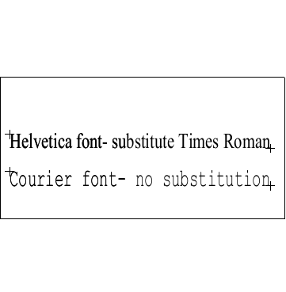

| Source image | Reference image |
|---|---|
 |
This tests ACI file priority-ordered substitution. The CGM file displayed on the left contains a fontlist with 2 font names, "Helvetica" and "Courier" and 2 restricted text elements which reference each font. The ACI file has a substitution list with 3 fonts, "BogusNoMatch", "Times Roman", and "Courier". The first font "BogusNoMatch" should be skipped because it is non-existant and the second "Times Roman" should be subsituted for Helvetica. The image on the right shows how the CGM should be rendered if the substitution works correctly.